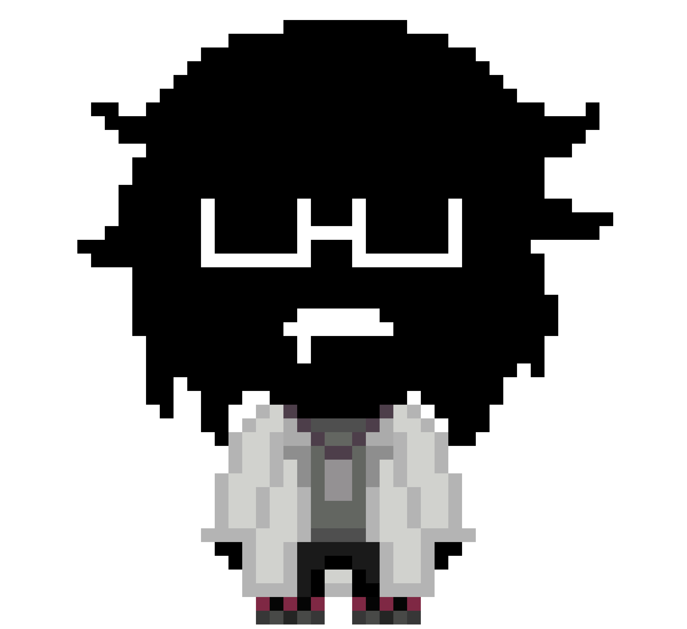
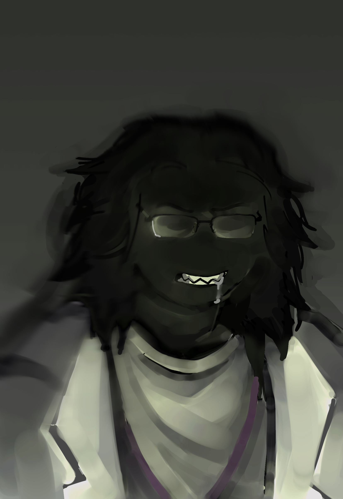
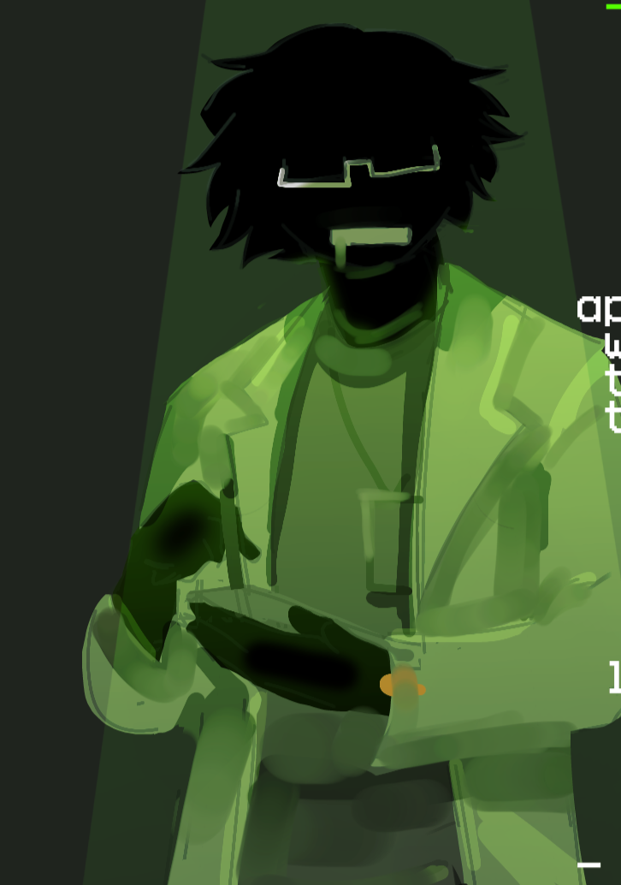
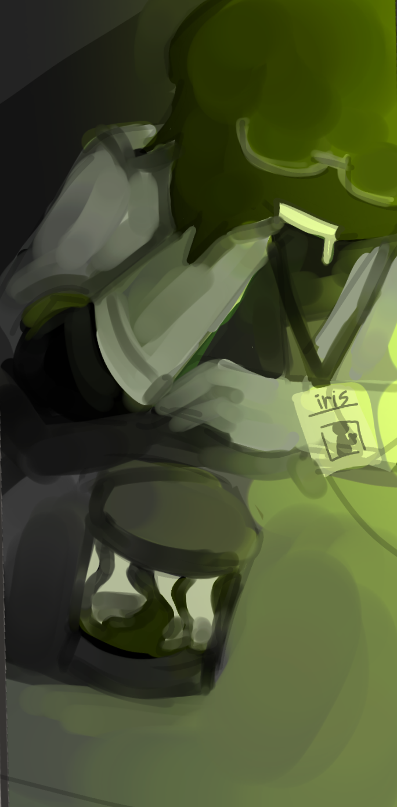
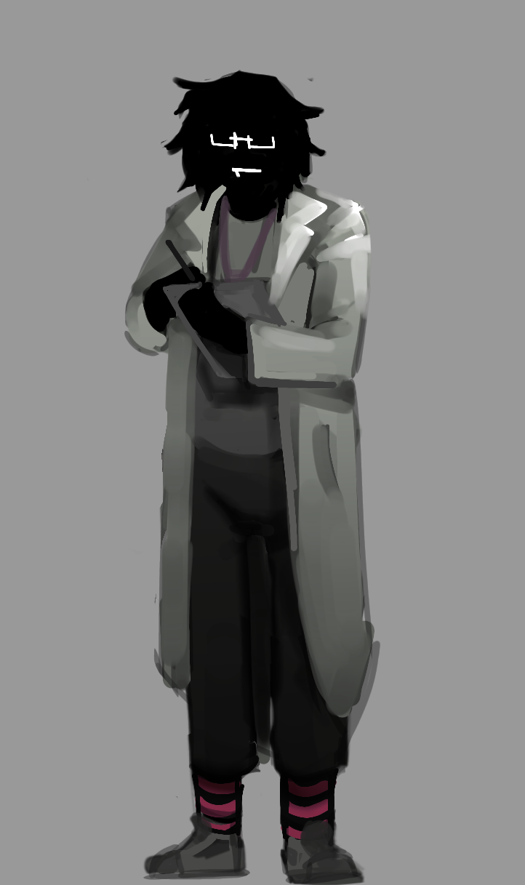

:/Ученый/ДЕЛО 6
:/Ученый/ДЕЛО 6

|
:/Ученый/ДЕЛО 6
 |
|
 первая фотография при обнаружении в фонде |
учёный в компании scp. фактически его работой является изучение чего-то что похоже на него, правда он совсем не делает успехов в этом. Вернее, не доносит всё, что он знает и скрывает это.
он в принципе знает достаточно об ирисверсе, не всё, но достаточно. хорошо ладит с 4, их взаимоотношения можно даже назвать "внук и дед".
история: объект выдает себя за 47-летнего мужчину, который видит себя как не аномального, а вполне обычного человека, с кожей, глазами и другими присущими человеку чертами. его заметила охрана в холле ночью совершенно случайно. он заявил, что является работником фонда и даже показал свою карту доступа, назвал прозвища других работников в коллективе. с ним проводили разные допросы, пару раз с использованием детекторов лжи. все его показания действительно указывали на то, что он работал здесь уже лет 6 и знает подробности того, чего не мог знать другой, кто не находился на месте происходящего. но при этом в делах о других работниках не было никого похожего и никто его не знал, на что он ответил "дак конечно, я сплю днем и из кабинета своего не вылезаю". на вопрос, где находится его кабинет, он назвал сектор, которого ранее не существовало. он настоял на том, чтобы показать, где он находится. и действительно, коридор, находящийся в слепой зоне камер, ведущий к одной единственной двери. там даже находились папки с какой-то информацией о других аномальных объектах и вещи, которыми относительно недавно пользовались. какое-то время его держали в камере содержания, удобно для него обустроенной, что он принял даже как отпуск, но он всё равно хотел бы |
факты:
- он довольно вспыльчивый.
- до того, как он устроился сюда работать, у него был аккаунт в соцсети, похожей на Facebook, и твиттер с никнеймом "names_for_fols". - у него нет фамилии и отчества, только имя "ирис".
- он плохо разбирается в новой технике, он еле-еле может поднять трубку или написать 4. из-за этого он довольно часто ведётся на шутки от 10, приходящие ему на почту. Как, например, "напишите 1 если вам нужна помощь в том, чтобы разобраться в технике, скоро к вам будет направлена тех. поддержка", и так каждые 3 месяца. из-за того, что он работает ночью, а днём спит, он не успевает попасть в столовку и вечно голодный, но ему часто у двери добрые сотрудники оставляют какую-нибудь еду в пластмассовых коробочках. 4-й носит ему сэндвичи.
- он очень любит зелёный цвет.
- он живёт у себя в кабинете, у него нет дома.
- он ни разу не был работником месяца.
- однажды ему отклонили одну просьбу, на что днем он пришёл в кабинет начальства с плазменной пушкой. после этого ему всё же одобрили просьбу. обычно он такого не делает, это был единственный раз.
- он часто играет в шахматы с 4-м. фокусник открывает портал перед столом 6, так, чтобы его не было видно, но он мог протиснуть туда руку, а на столе объекта стоит шахматная доска. иногда он жульничает. как именно? мы не говорим об этом.
:/ галерея

